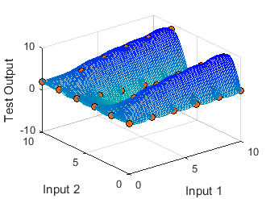
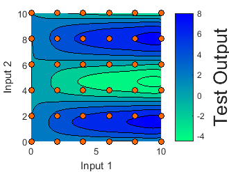

Contents
Tutorial: How to visualize data
close all
Test Function
The test function as follows:
That is, the output is related to the first input variable by a Michaelis Menten curve(steep increase for small values followed by a plateau). The second input variable leads to oscillation and the third input variable leads to an linear monotonically increase. The effect of the first and second input are coupled with each other.
For a better visualization, pair-wise combination of input variables are plotted against the output. Remaining input variable was hold constant at the value of 2.
visualizeTestFunction();

Initialization
Step 1: Create a new Kriging analysis object. For more details see documentation of tutorialCreatingObject
[KrigingObj]=tutorialCreatingObject(false);
% Remember the Currently used object
indexKrigingObj = 1;
nInputVar = KrigingObj.KrigingObjects{indexKrigingObj}.getnInputVar;
2D - Interpolation Plots
The 2D interpolation depicts the estimated functional relationship between the output variable and one input variable. The remaining input variables are fixed to a user defined value. Red dots indicate the data points
Confidence bounds are by default to prediction value standard deviation. Prediction error is smaller near the data points and larger at poorly sample regions. The prediction error is an estimate based on:
- Measurement Noise
- Mutation information content of the data
- Information content of the data w.r.t. to the point of interest
for iInputVariable = 1:nInputVar % Adjust Indices and values remainingIndices = setdiff(1:nInputVar,iInputVariable); remainingValues = ones(1,2)*2; KrigingObj.calcInterpolation_2D(indexKrigingObj,iInputVariable,remainingIndices,remainingValues) KrigingObj.plotInterpolation_2D(1); % Set format appropriate for documentation set(gcf,'Position', [100, 100, 330, 330/4*3]); set(gca,'FontSize',10) end
3D Interpolation plots
The 3D interpolation visualizes the estimated functional relationship the between output variable and two input variables. The remaining input variables are fixed to a user defined value.
NOTE: Settings such as "ShowBounds" and "ShowData" are global and are used also for several other visualization features
combinations = [1,2,3;1,3,2;2,3,1]; % Pair-wise combinations of input variables KrigingObj.setShowBounds(true) % If false, only prediction is shown without the confidence tube KrigingObj.setShowData(true) % Show provided data points for iComb = 1:nInputVar KrigingObj.calcInterpolation_3D(indexKrigingObj,... combinations(iComb,1:2),combinations(iComb,3),2) KrigingObj.plotInterpolation_3D(indexKrigingObj) campos([-40.0176 -52.6198 92.8089]) % Set the camera position grid on % Set format appropriate for documentation set(gcf,'Position', [100, 100, 330, 330/4*3]); set(gca,'FontSize',10) end KrigingObj.setShowBounds(true)
Screening Plots
Screening plots show interpolation for all pair-wise combinations of input variables. The remaining input variables are set fix to a predefined reference point.
KrigingObj.setReferencePoint([2,2,2]); % Values for remaining input variables KrigingObj.calcScreeningAnalysis(indexKrigingObj) KrigingObj.plotScreeningAnalysisKrigingInterpolation(indexKrigingObj) % Set format appropriate for documentation set(gcf,'Position', [100, 100, 700, 700/4*3]); set(gca,'FontSize',10)
nD Interpolation plots
The idea of "n-D" is to use several contour plot showing the dependency of the output variable on two input variables while increasing a third one. This can be repeated for all combination of input variables leading to an overall understanding.
KrigingObj.setnPlots(5); % Number of columns in each row KrigingObj.calcInterpolation_nD(indexKrigingObj,[1,2,3;1,3,2;2,3,1],[],[]) % no remaining input variables KrigingObj.plotInterpolation_nD(indexKrigingObj) % Set format appropriate for documentation set(gcf,'Position', [100, 100, 700, 700/4*3]); set(gca,'FontSize',10)
MakeMovie
The movie analysis allows a dynamic visualization of three factor interaction. In the end, an avi file is produced with a user defined frame rate. In total, n 3D-interpolation plots are generared for the movie. The camera position has to be adjusted at the beginning and is hold fixed for the remaining recording.
Under Windows, the resulting movie can be opened here
fileName = 'movieAnalysis'; KrigingObj.setFrameRate(2) KrigingObj.setnStepsBetweenBounds(10) KrigingObj.setReferencePoint([2,2,2]); % Values for remaining input variables KrigingObj.setShowBounds(false); % Show only model prediction KrigingObj.setPlottingRange([-8,18]) KrigingObj.make3dMovieAnalysis(indexKrigingObj,3,3,fileName)
Step 1 of 10 Please Rotate Figure and continue with an arbitrary key Step 2 of 10 Step 3 of 10 Step 4 of 10 Step 5 of 10 Step 6 of 10 Step 7 of 10 Step 8 of 10 Step 9 of 10 Step 10 of 10